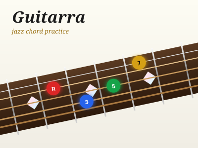

Google
Buscar
Yandex
Поиск
𝕏
Post
YouTube
Ver
···
More Apps
▦
🗞️
📖
@resisres ↗
Loading…
▦
🗞️
📖
Open ↗
⟳
All
Loading…

Apps →
Go
Monitor
Mañaneras
Librería
Sacred
Schedules
Guitarra
···
More
← Feed
Iglesia vs Mexico
China Trip
Schedules
Guitarra
Guitarra (beta)
Close